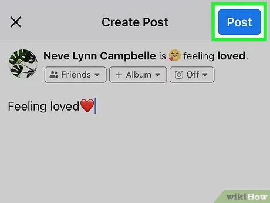
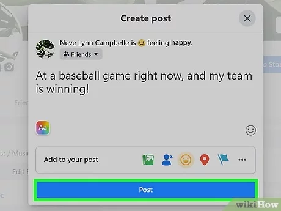

Feeling Posts & Status Updates



Explore how feelings are integrated into technology, from user interfaces to artificial intelligence.
How design impacts the emotions users feel while interacting with digital products.
Soft colors and rounded edges make users feel welcome and relaxed.
Clean layouts and neutral colors give a sense of trust and focus.
Colors like blue evoke calmness, while red triggers urgency or excitement.
A seamless user journey creates satisfaction and reduces frustration.
Emojis are a universal language for expressing feelings in digital platforms.